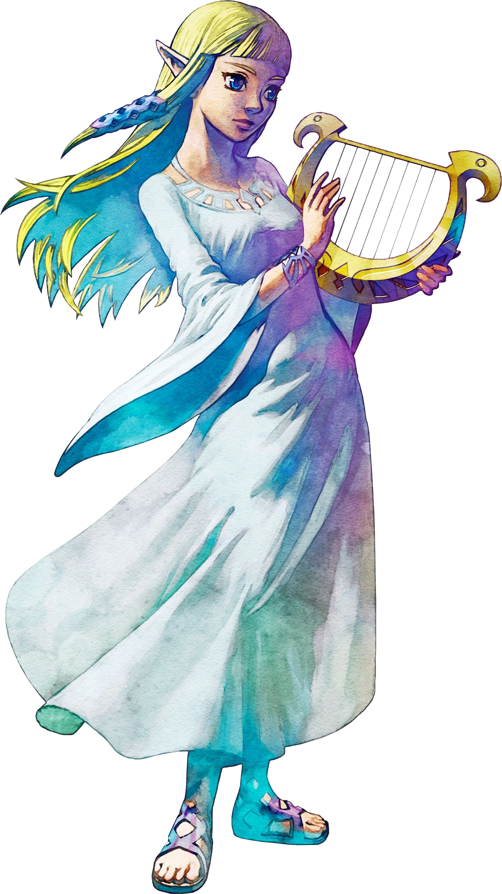

Geschiedenis
De legende van de godinnen en de heldDe drie godinnen Din, Nayru en Farore hebben Hyrule gecreërd
Voor ze hun creatie verlieten, lieten ze de wensvervullende Triforce achter.
De godin Hylia waakte over deze Triforce, maar de demonenkoning Demise wilde maar al te graag dit artefact in zijn duivelse handen krijgen.
Hylia nam de Triforce en de overlevende mensen mee naar eilanden in de lucht.
Ze wist dat dit echter uitstel van executie zou zijn, dus ze trof voorbereidingen om Demise te kunnen stoppen.